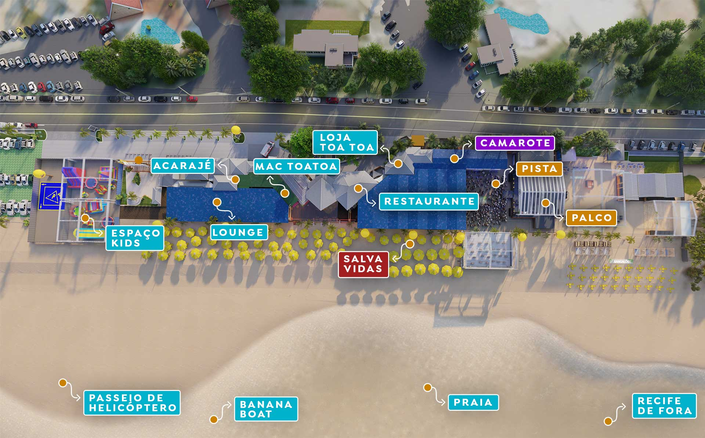

Informações
Porto Seguro é um município situado no sul do estado da Bahia, no Brasil. Compartilha, com os municípios limítrofes de Santa Cruz Cabrália e Prado, a primazia de ser o local de chegada dos portugueses ao Brasil em 1500. O vilarejo que deu origem ao município de Porto Seguro foi fundado em 1535 e está tombado em quase sua totalidade pelo patrimônio histórico, não sendo permitida a construção de prédios altos (com mais de dois andares).[3][10] É cortado pelo Rio Buranhém.
Complexo de Lazer Axé Moi.

Complexo de Lazer Toa Toa.
Complexo de Lazer Toa Toa.
| Onde Ir | Localidade | Atração | Qtd. Pessoas | Custo Médio | ||||||||||
|---|---|---|---|---|---|---|---|---|---|---|---|---|---|---|
| Porto Seguro | Praia de Taperapuan | Axé Moi | 2 | R$ 100,00 | ||||||||||
| Porto Seguro | Praia de Taperapuan | Toa Toa | 2 | R$ 100,00 | ||||||||||